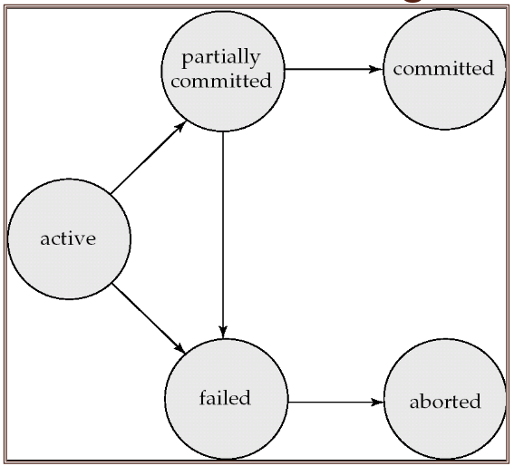
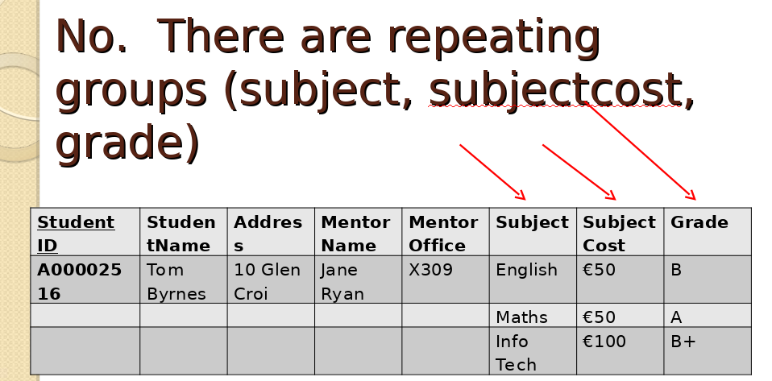
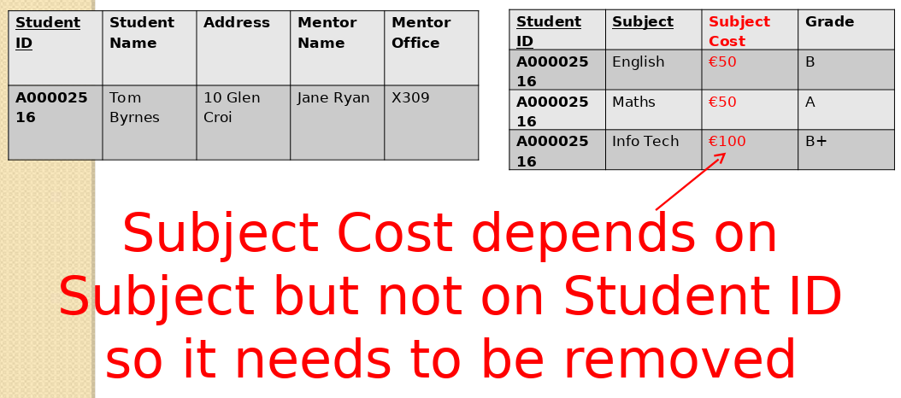
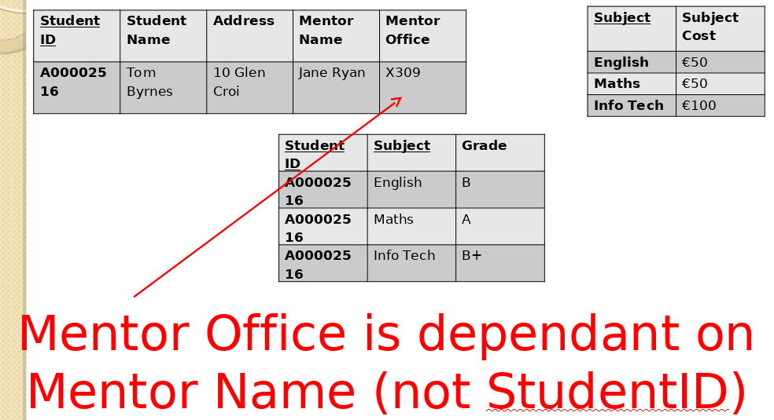
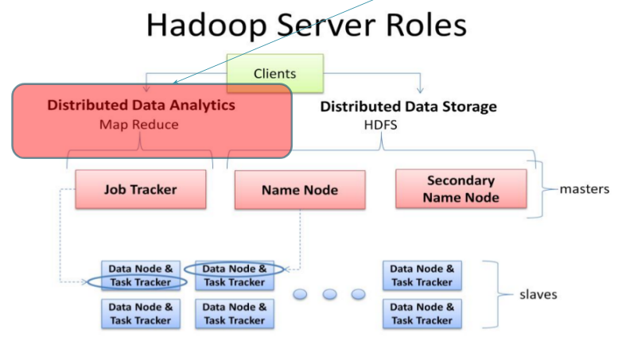
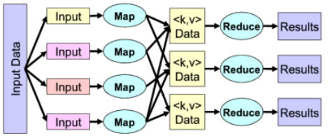

Databases 4
Table of Contents
1 Grade Distribution
- 50 CA
- 50 Exam
- Four benefits of SQL views
2 DDL (Data Definition Language)
- Create
- Drop
- Alter
3 DML (Data Manipulation Language)
- Select
- Insert
- Update
- Delete
4 Select Query Examples
- Get all that are not in their 40s
select * from details where age not between 40 and 50; -- OR select * from details where age not like '4%'; -- OR select * from details where age < 40 OR age > 49;
- Get all with a name longer than 4 letters
select * from details where length(firstName) > 4;
- Get sum of all female wages
select *, sum(rate * hours) as 'Wage' from details where gender = 'F';
- Average age in each department
select department,avg(age) as 'AVG Age' from details group by department;
- Count number of females and males per department
select department,gender,count(*) as 'Count' from details group by gender, department;
- Youngest person (or use limit with order by)
select * from details where age = (select min(age) from details);
5 Views
- Creates a copy of a specific query
- Provides 4 mandatory aspects:
- Design independence: Limit what is seen and thus provide an abstraction to the viewer
- Data security: Restrict access to what is actually visible from a table
- Simplified queries: Hide complexity
- Updatability: Can be used to update, insert and delete data as well
- To create an updateable view:
- No
DISTINCT - No aggregation functions
- No
GROUP BYorHAVING - No
UNION
- No
CREATE VIEW names_department AS SELECT firstNames, lastName FROM details; -- then read the names_department view as follows select * form names_department;
- Create a view of a concatenated name and a phone number
create view DocsPhone as select concat(firstName, " ", lastName) as 'Full Name', contactNo from doctors;
6 Transactions
6.1 Definitions
- Concurrent Control: Ensure integrity when the db is accessed simultaneously by more than one user.
- Consistent: There are no contradictions between items stored in the db
- Transaction: Combine a series of SQL statements into a single unit of work
6.2 Concept
- Start a transaction with the db in a consistent state
- End the transaction with the db in a consistent state
6.3 ACID Principles
- Atomicity: Either all is done or NONE of it
- Consistency: Start and finish in a consistent state
- Isolation: Even when executed concurrently the final result is the same
- Durability: The effects must persist, even if the db crashes
6.4 States
- Active: From the start until failure or commited
- Partially Commited: Last statement completed but changes not yet made permanent
- Commited: Changes now made permanent.
- Failed: An error occurred, changes rolled back, must abort
- Aborted: All effects have been removed from db
6.5 States Diagram

6.6 Concurrency Problems
- Lost Updates: Two concurrent users update the same row
- Dirty Reads: Reading data that has not been yet commited
- Nonrepeatable Reads: Two SAME selects get different data because a commit happened in between
- Phantom Reads: Performing an update or delete on a set, while another is performing an insert or delete
7 Stored Programs
7.1 Stored Procedure
- Simple stored procedure that starts a transaction and attempts to update the invoices table
-- changes the standard delimiter (semicolon) to a double forward slash DELIMITER // CREATE PROCEDURE update_surname ( invoice_id_param INT, credit_total_param DECIMAL(9,2) ) BEGIN DECLARE sql_error TINYINT DEFAULT FALSE; DECLARE CONTINUE HANDLER FOR SQLEXCEPTION SET sql_error = TRUE; START TRANSACTION; UPDATE invoices SET credi_total = credit_total_param WHERE invoice_id = invoice_id_param; IF sql_error = FALSE THEN SELECT "Commited"; COMMIT; ELSE SELECT "Rollback"; ROLLBACK; END IF; END //
- Use the procedure as follows
CALL name_of_procedure(56, 300);
- Input and output in Stored Procedure: outputs the amount of updates as the return value
DELIMITER // CREATE PROCEDURE update_surname ( IN invoice_id_param INT, IN credit_total_param DECIMAL(9,2), OUT update_count int ) BEGIN DECLARE sql_error TINYINT DEFAULT FALSE; DECLARE CONTINUE HANDLER FOR SQLEXCEPTION SET sql_error = TRUE; START TRANSACTION; UPDATE invoices SET credi_total = credit_total_param WHERE invoice_id = invoice_id_param; IF sql_error = FALSE THEN SET update_count = 1; COMMIT; ELSE SET update_count = 0; ROLLBACK; END IF; END //
7.2 Stored Functions
- Functions are much alike procedure, however they: can return only a single value, cannot perform INSERT, UPDATE, DELETE
- Example of a function that calculates salary
DELIMITER // CREATE Function calculate_salary ( id_param INT ) RETURNS DECIMAL(9, 2) BEGIN DECLARE salary_var DECIMAL(9,2); select sum(rate*hours) into salary_var from details where id = id_param; RETURN salary_var; END//
- Use as like a normal function
SELECT calculate_salary(3);
- Dropping functions
DROP Function IF EXISTS calculate_salary;
7.3 Triggers
- Triggers are like hooks, they get fired before or after a: DELETE, UPDATE, INSERT
- Triggers can obscure what the server actually does, so be careful with them
- Using a lot of triggers can be slow
- DB maintenance can become difficult if there is a lot of triggers that do "invisible" work
- You must specify a
FOR EACH ROWclause. This clause creates a row-level trigger that fires once for each row that's modified. - MySQL only supports row-level triggers
SHOW TRIGGERSto show all triggers, orSHOW TRIGGERS IN db_nameto show triggers for a particular database- Example of a
BEFOREtrigger:
DELIMITER // CREATE TRIGGER details_before_update BEFORE UPDATE ON details FOR EACH ROW BEGIN SET NEW.department = UPPER(NEW.department); END//
- Example of AFTER INSERT
DELIMITER // DROP TRIGGER IF EXISTS orders_after_insert; CREATE TRIGGER orders_after_insert AFTER INSERT on orders FOR EACH ROW BEGIN INSERT INTO orders_audit VALUES (NEW.order_id, NEW.customer_id, "INSERTED", NOW()); END//
7.4 Events
- It fires at scheduled events
- Usually disabled by default, check with
show variables where Variable_name = "event_scheduler"; - Set with
SET GLOBAL event_scheduler = ON; - Show events with
SHOW EVENTS; - Show in certain DB
SHOW EVENTS db_name; - Enable/Disable event with
ALTER EVENT event_name DISABLE/ENABLE - Example of a one-time event (here its minutes, normally it would be hours or days, weeks, months):
DROP EVENT IF EXISTS one_time_delete_audit_rows; DELIMITER // CREATE EVENT one_time_delete_audit_rows ON SCHEDULE AT NOW() + INTERVAL 10 MINUTE DO BEGIN DELETE FROM orders_audit WHERE action_date < NOW() - INTERVAL 10 MINUTE; END //
- Example of a recurring event:
DROP EVENT IF EXISTS monthly_delete_audit_rows; DELIMITER // CREATE EVENT monthly_delete_audit_rows ON SCHEDULE EVERY 1 MONTH STARTS '2019-01-01' DO BEGIN DELETE FROM orders_audit WHERE action_date < NOW() - INTERVAL 1 MONTH; END //
8 Normalisation
8.1 1NF
- Contains no repeating columns, also each column must not repeat values (e.g. comma separation)
- Example of not a 1NF:

- To convert to 1NF remove repeating groups
8.2 2NF
- Every column in a table must be functionally dependent on the whole primary key of the table
- Functional dependency indicates that a link exists between the values in two different columns
- To convert from 1NF to 2NF remove columns that are not dependent on the primary key
- Example of converting from 1NF to 2NF (remove attributes that are not dependent on WHOLE primary key):

8.3 3NF
- An entity is in the third normal form if it contains no transitive dependencies.
- A transitive dependency is one which is dependant on a non-key attribute
- To convert to third normal form, remove attributes that depend on non primary key attributes
- Example of converting from 2NF to 3NF (remove transitive dependencies):

9 ORM
9.1 Overview
- Main problems GSIAD:
- Granurality: Problems with fine-grained classes embedded in coarse-grained classes. In SQL there are only rows and columns
- Subtypes: Inheritance and polymorphism are natural OOP paradigms, SQL has no such concept
- Identity: Java compares object by reference (memory location), SQL does not have such comparisons
- Association: Java uses associations by references, SQL uses foreign keys. Java can be many-to-many, tables are always one-to-one or one-to-many, many-to-many can only be done by introducing a new table
- Data navigation: Java uses getters to retrieve data from one object to another, SQL uses joins
10 MongoDB
10.1 Overview
- Document oriented, schema free, open source, high-performance
- Comparison with Relational
| Relational | Mongo |
|---|---|
| Database | Database |
| Table | Collection |
| Row | Document |
| Column | Field |
- Prefers horizontal scaling
- Has automatic sharding
- Increases throughput and capacity horizontally
- Reduces the amount of data stored on a single server
- Replications: store copies of the data across different servers
10.2 Design
Relations
- Embed: store data in a single document
- Reference: keep a reference as a pointer to another data
Why embed over reference
- Requirements state that data from 2 or more entities are frequently queried together
- The child is a dependent entity
- A one-to-one relationship between two entities
- Similar volatility
- If the entity embedded is not a key entity
10.3 Validation
11 Hadoop
11.1 Definitions
11.2 Overview
- Large scale distributed batch processing architecture. While it can operate on a single machine, it really shines when its distributed across many machines
- Designed to efficiently distribute workload
- Designed to handle terabytes to petabytes of data
11.3 Architecture

11.4 Map Reduce Architecture (Distributed Data Analytics)
- MapReduce is a programming model for processing and generating large data sets in parallel on a distributed system
- The programmer creates the map and reduce functions. Code distribution, data distribution, parallel processing, worker scheduling, etc. are all handled by Hadoop
- Map: sorts data
- Reduces: summarizes data
- Example: Map extracts the data that you want and passes it then to multiple reducers for computing

11.5 Hadoop Data Distribution
- Processes running process data on that node. A mapper will not process data on another node.
- Hadoop schedules processes in proximity to the location
- Files are scattered across servers, in whole or in pieces (depending on size), therefore each mapper operates on a chunk of data only
11.6 Hadoop Software Library
- In one Hadoop Cell there's at least 3 servers containing:
- One contains: NameNode & JobTracker daemons
- Second contains: Secondary NameNode
- Third contains: DataNode & TaskTracker
NameNode
- Master of HDFS, single point of failure. Keeps track of how the files are broken down and directs DataNodes
Secondary NameNode
- Take snapshots of NameNode
JobTracker
- Liason between your application and Hadoop. Determines the execution plan by determining which files to process, which nodes to assign to which tasks and monitors the tasks.
DataNode
- Reads and Writes to HDFS
TaskTrackers
- Runs the individual tasks
11.7 Dealing with Failure
- A single master constantly pings each mapper
- Tells what kind of jobs to run
- If the ping fails, the master assumes that the mapper is dead
- Passes the job to a different mapper
- If one machine is very slow in computing, the master may decide to kill off that task and pass it off to a different mapper